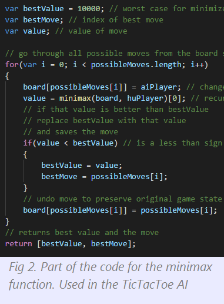

Jason Siu Blog
Doing what I enjoy the most:
Learning and Creating New Things!
Basic Introduction about me
Hi! My name is Jason Siu, and I am currently a student
attending Stephen F. Austin High School. I am always
working on something computer science related, whether
it's building an AI in Javascript, making an android app in Java,
or building neural networks from scratch in Python! I am
a 100% self learner when it comes to these topics, and I am
always acceptant and ready to learn more, no matter how
hard a task or concept may seem!

My Past and Current Hobbies
My hobbies currently are programming (most notably
seen through my personal projects) and exercising.
On the occaisional basis,
I think of very difficult math questions for myself that
I initially can't think of
an answer to. However, with time, I always solve those questions
with deep understanding, and I end up learning something new
in the long run. In the past I loved solving Rubik's Cubes.
I used to love it so much that I made a YouTube channel
dedicated to teaching others about it. I have done this hobby for about
two years. My fastest time ever was 9.53 seconds. However, that solve
was a a very lucky one. You can view my very old videos
here.
You'll notice when you watch some of my videos that I used to make basic
2d and 3d animations!
I am very skilled in:
Problem Solving
I am very open to thinking and approaching problems in more than
one way, whether the answer requires creative thinking or more
of a methodical approach. I always think to myself that knowing
only one way to do things isn't good enough, but knowing more ways makes
myself a more flexible thinker.
Willingness to Learn
Learning is very personal to me. I always enjoy knowing things
no matter the practicality. From my point of view, learning
is a way to improve yourself, and become better than you previously
were. I always aim to be the best that I can, and so learning new
things is a daily occurence in my life.
I would describe myself as:
Independent
I primarily to my own things by myself. However, if someone asks
for help, and wants to work with me, I am able to do so willingly.
However, most of my general learning has came from myself, and all of my
coding projects have been done independently.
Hardworking
I work continuously on a project or any problem for many consecutive hours
if needed. If i don't understand something, I will try my hardest to understand it,
and grasp a good intuition about such thing. Whatever is in my highest priority, I
will do and eventually, even if it may take many days, complete.
Achievements
Freshmen Year (High School):
- Achieved Concert Band in Region Auditions for Band as Flute
Sophomore Year (High School):
- Achieved District Band in Region Auditions for Band as Flute
- Made a C# simple text editor
- Made a simple C++ calculator application
Junior Year (High School):
- Competed in Seven Lakes High School Coding Competition
- Competed in Taylor High School's Coding competition
- Competed in Clement High Schools Coding Competition
- Competed in Cypress High School's Coding competition
- Competed in Dulles High School's competition and achieved
1st Place in the written portion
- Competed in Code Wars, and received a score of 29 points
- Competed in Computer Science UIL District 2018, and received 3rd place overall
- Made a working android game in Java (Unfortunately not on Google Play Store)
- Made a neural network that classifies which type of Iris an input flower is
- Made a neural network that classifies what digit a given image is, from 0 to 9
- Made a keylogger in C++ that also tells you what window the user is on
- Made an unbeatable TicTacToe AI in Javascript using minimax algorithm
- Made a Chess AI in Javascript using alpha beta pruning and quiescence search
Upcoming Senior Year (High School):
- None so far...